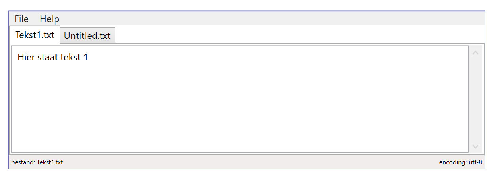
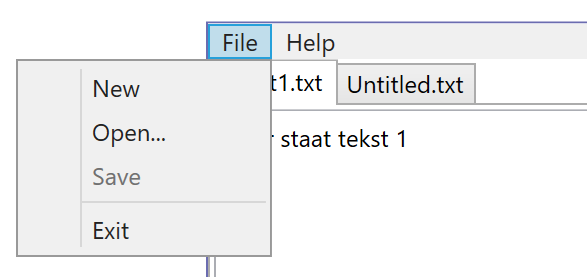
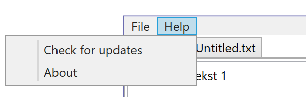

We integreren de laatste twee UI controls in één grotere opgave: de StatusBar en het menu.
Bouw een mini-tekst editor naar voorbeeld van onderstaande screenshots. De gebruikte controls zijn DockPanel, Menu/MenuItem, StatusBar/StatusBarItem, TextBlock, TabControl/TabItem, ScrollViewer, TextBox.


Maak nu een About Window dat opent via het menu-item Help, About. Alle uitleg over hoe je een dergelijk venster maakt, opent en weer sluit vind je weer in de cursus bij Window control.